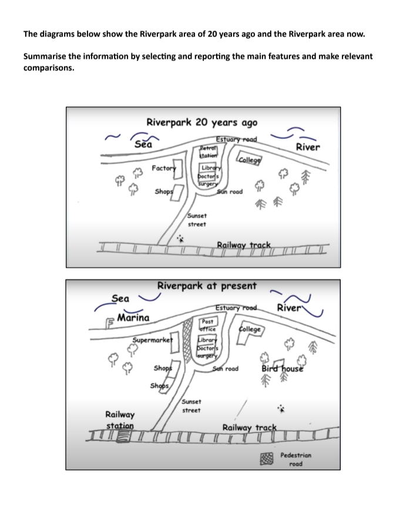

Task Overview
Choose an overview media (audio/video) to get a guided briefing for your Task 1.
A concise audio walkthrough of approach & tips. The step marks complete when the audio ends.
A short video overview (or speaker notes). The step marks complete when the video ends.
Active Listening: Guess the Task
Scan this QR code with your phone to submit your predictions, or click the link to open it:
Task Type
Process Diagram (Man-made Process)
Requires describing the step-by-step industrial manufacture of instant cup noodles using process verbs and sequential connectors.
Image Analysis
- • Process type: Industrial, linear manufacturing system.
- • Number of stages: 8 distinct assembly line steps.
- • Striking feature: Noodles are deep-fried and dried prior to flavoring and packaging.
Brainstorm (3-minute focus)
Read the Task 1 question and study the process diagram. Use the timer to focus on planning.
IELTS Academic Writing Task 1 Question
The diagrams below show the Riverpark area of 20 years ago and the Riverpark area now. Summarise the information by selecting and reporting the main features and make relevant comparisons.
Write at least 150 words.
Riverpark Development Sequencing Challenge
Rank the stages in geographical order from First ➔ Last by clicking them:
{kind=link}

Identify categories! Jot main points: highest/lowest points, significant changes, and ranking comparisons.
Vocabulary & Data Descriptors
High-level descriptors and key comparison vocabulary. (Click words to hear pronunciation)
High-Level Map Verbs
| Simple Term | Band 9 Alternative |
|---|---|
| pulled down | Demolished |
| built | Constructed |
| converted for walking | Pedestrianized |
| kept unchanged | Preserved |
| modernized | Redeveloped |
| split into two | Divided |
| changed function | Converted |
| remained | Persisted |
Core Map Vocabulary
| Word | IELTS Example |
|---|---|
| Demolished | The petrol station was demolished to make way for a new post office. |
| Constructed | A marina was constructed in the sea to provide boat facilities. |
| Pedestrianized | The road at the center of the town has been completely pedestrianized. |
| Preserved | The college and library have been preserved in their original locations. |
Ear-Trainer: Vocabulary Hunt
Lexical Hunt: 0/4 FoundListen to the audio overview again and click the vocabulary cards below to mark them as "Heard". Can you find all 4 core transition words used in the lesson?
Plan: Introduction & Overview
High-scoring models to frame your Task 1 report.
"The maps illustrate the industrial, commercial, and infrastructural developments in the Riverpark area over a twenty-year period from the past to the present day."
"Overall, the Riverpark area has undergone a significant transformation from a semi-industrial layout into a more commercial and leisure-oriented space. The most notable changes include the construction of a marina in the sea, the replacement of the factory with a supermarket, and the addition of public transport links near the railway track."
Plan: Body Paragraph Bifurcation
Divide the categories logically to write two balanced body paragraphs.
Body Paragraph 1
Sea, Sunset Street, and the Railway Track
- A new marina has been constructed in the sea to accommodate boats.
- Near Sunset Street, the former factory has been demolished and replaced by a supermarket.
- The retail shops nearby have been redeveloped into two separate units.
- Additionally, a new railway station has been built on the railway track.
Body Paragraph 2
Estuary Road, Sun Road, College, and the Woodlands
- The petrol station along Estuary Road has been replaced by a post office.
- The road connecting Sunset Street to Sun Road has been pedestrianized.
- The library, doctor's surgery, and college have remained unchanged in their original positions.
- The woodland area has been preserved, with a bird house added to the site.
Stage-by-Stage Breakdown
A step-by-step description of developmental processes for writing Body Paragraph 1 and 2.
Paragraph 1 Flow (Commercial & Transport)
- Marina: Built in the sea to provide vessel mooring facilities.
- Supermarket & Shops: Former factory demolished to erect a supermarket; nearby shops split into two units.
- Railway: A new station built along the railway track.
Paragraph 2 Flow (Public Infrastructure)
- Post Office: Replaced the old petrol station along Estuary Road.
- Pedestrianization: Central connecting road turned into a walking pedestrian road.
- Woodlands: Trees preserved and a bird house added.
Workbook Power Expressions
Learn the essential "Power 16" workbook expressions categorised for Band 9 map comparisons and developments.
Tier 1: Demolition & Replacement
- • Demolished to make way for: (e.g. The petrol station was demolished to make way for a post office.)
- • Replaced by: (e.g. The factory was replaced by a supermarket.)
- • Built on the site of: (e.g. A supermarket was built on the site of the former factory.)
- • Erected: (e.g. A railway station was erected near Sunset Street.)
Tier 2: Preservation & Persistence
- • Remained unchanged: (e.g. The college and library remained unchanged.)
- • Preserved: (e.g. The woodland area was preserved.)
- • Persisted: (e.g. The doctor's surgery persisted in its original position.)
- • Stood in its original location: (e.g. The library still stood in its original location.)
Tier 3: Additions & Modifications
- • Constructed: (e.g. A marina was constructed in the sea.)
- • Introduced: (e.g. A bird house was introduced to the woodland.)
- • Pedestrianized: (e.g. The connecting road was pedestrianized.)
- • Redeveloped: (e.g. The shops were redeveloped into two separate units.)
Tutor Master Reference: Map Connector Bank (Best 12)
Teacher-Level ResourceA sophisticated, functional reference bank for guiding Band 8-9 map transitions:
- • Demolished to make way for
- • Cleared to accommodate
- • Replaced by
- • Substituted with
- • Converted into
- • Remained unchanged
- • Preserved / Persisted
- • Stood in its original location
- • Constructed
- • Introduced / Added
- • Erected / Built
Final Review & Download
Review your notes and download the tutor report or return home.
Task 2 Overview
Choose an overview media (audio/video) to get a guided briefing for your Task 2 Essay.
A concise audio walkthrough of approach & tips.
A short video overview.
Active Listening: Guess the Task
Scan this QR code with your phone to submit your predictions, or click the link to open it:
Brainstorm (5-minute focus)
Read the Task 2 question carefully. Plan your ideas and examples.
Task 2 Question
Some people think that zoos are cruel and should be closed down. Others, however, believe that zoos can be useful in protecting wild animals.
• Discuss both the views and give your opinion.
Time Management
Spend 5 minutes planning. A good plan saves time during writing.
Generate ideas: Reasons, Examples, Consequences.
Vocabulary Table
High-level vocabulary for your essay. (Click word to listen)
| Word | Meaning | Example |
|---|---|---|
| Confinement | The state of being restricted in a limited space. | The lifelong confinement of large predators in small cages can lead to severe psychological distress. |
| Indispensable | Absolutely necessary; essential. | Captive breeding programs have proved indispensable in saving endangered species from extinction. |
| Abolished | Formally put an end to a system, practice, or institution. | Critics demand that traditional zoos be abolished in favor of natural wildlife reserves. |
| Cognitive | Relating to mental processes of perception, memory, judgment, and reasoning. | Restrictive enclosures often fail to stimulate the cognitive abilities of highly intelligent primates. |
| Altruistic | Showing a disinterested and selfless concern for the well-being of others. | While some zoo operators have purely commercial motives, others are driven by altruistic conservation goals. |
| Propensity | An inclination or natural tendency to behave in a particular way. | Captive animals often lose their natural propensity to hunt and survive in the wild. |
Ear-Trainer: Vocabulary Hunt
Lexical Hunt: 0/6 FoundListen to the audio overview again and click the vocabulary cards below to mark them as "Heard". Can you find all 6 premium words used in this lesson?
Plan: Introduction
Paraphrase the question, state your position, and outline your main points.
While many people argue that keeping animals in zoos is cruel and should be banned, others believe these facilities play a key role in protecting wildlife. In my opinion, despite the ethical concerns of keeping animals in cages, zoos are necessary because they safeguard endangered species from extinction.
Plan: Conclusion
Summarise your main points and restate your final opinion.
In conclusion, although captivity can cause animals psychological distress and limit their freedom, zoos provide essential breeding programs and a safe environment for species under threat. Therefore, I believe zoos should remain open, but they must prioritize animal welfare over commercial profit.
Plan: Body Paragraph 1
Focus: Arguments for Zoo Closure (Cruelty & Captivity)
1. Restricts Natural Behavior
Enclosures prevent animals from roaming long distances, hunting, and engaging in natural social structures.
2. Causes Psychological Distress
Constant public exposure and artificial noise can lead to chronic stress and depression in captive animals.
3. Weakens Survival Instincts
Animals born or raised in captivity become dependent on keepers for food and shelter, losing crucial survival skills.
4. Driven by Commercial Profit
Many roadside zoos prioritize ticket sales and public entertainment over the genuine health and comfort of their animals.
Plan: Body Paragraph 2
Focus: Arguments for Zoo Conservation (Wildlife Protection)
1. Prevents Extinction
Captive breeding programs provide a safe refuge to rebuild populations of species threatened in the wild.
2. Fosters Public Awareness
Seeing live animals up close inspires visitors to care about conservation and support global wildlife protection funds.
3. Facilitates Scientific Research
Zoos offer researchers a controlled environment to study animal biology, behavior, and disease management.
4. Safe Haven from Threats
Zoos shield vulnerable animals from threats in the wild, such as poaching, habitat destruction, and climate change.
Final Review & Download
Review your essay plan and download the tutor report.